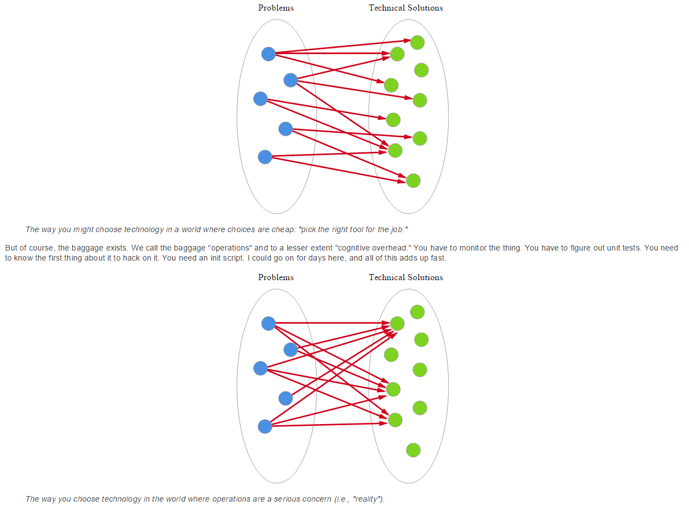

Day 3 Review
Bibliography
Patterns
Example Model
http://martinsumner.github.io/presentations/operations_iwc_d4.html#/
Parallels from Agile for Improvement
Terminology is simplistic
Needs are user-driven and evolving
Measuring flow is important
Adaptability to confusing and unexpected events
Unavailability - process, organisation and bias
Direct communication with users
http://martinsumner.github.io/presentations/operations_iwc_d1.html#/
Human behaviour and Organisation
Confidence and Perception
Service introduction
Technical debt
Feedback loops
http://martinsumner.github.io/presentations/operations_iwc_d2.html#/
Human reaction to observations
What makes a good dashboard
Obervability patterns
http://martinsumner.github.io/presentations/operations_iwc_d3.html#/
Balance required - must still fail cheaply
Balance required - complexity trade-off
Balance required - perception and trade-offs
Automated tests
Code standards and peer review
A mechanism for consistent deployment
Minimalist building blocks
... To determine debt not success
Log-driven development
Intermittently failing system tests
Functionally complex volume tests
Building blocks, not magic boxes
Async message patterns, the actor model
Eventual consistency
Nygard patterns
Standardise a communication framework
Build the framework into continuous delivery
Apply security within the framework
Add diagnostics to the framework
“Whereas the difference between poor conceptual designs and good ones may lie in the soundness of design method, the difference between good designs and great ones surely does not.
Great designs come from great designers.
... very best designers produce structures that are faster, smaller, simpler, cleaner, and produced with less effort. ”
Fred Brooks, No Silver Bullet, 1986
Finding the simplest path to most destinations
Team size must be part of the target
Constraints may pre-exist
Infrastructure choices should not be abstract
Use open source
Defer user research
SAD + KADs
Service Model
Security Policy
KOPs
Look hard for edge cases, smooth them out
Rehearse responding to the unexpected
Don't lump activity at the end
Don't alienate third parties
Assess if something is better than nothing
RO go live - lazy data migrations
Avoid complexity at stressful time
Don't offload planning
Make plans dynamic
The project needs them
They need to experience operations
Prepare for the shock of live ...
... Plan for how it will impact people
Train and rehearse
Continuously improve continuous delivery
KOP improvement
Capacity reviews
SLO reports
Incident retrospective
... even when it isn't necessary
... even when it probably won't work
Invert Lines
Recover
Five Whys
Be the Bookie
Remove distance
Remove conflict from open discussion
Universal detection is a better goal than partial prevention
... (other than sanctuary process)
... and not just stop
Not just technology
Stupidity is not an explanation
Root cause isn't helpful
Changing the response is normally better ..
... than changing the trigger
Show and tell - incidents, problems
Retrospectives
Address technical debt in series not in parallel
Capacity reporting needs to find strange limits
Collate and investigate anecdotal evidence
Other errors are incident red herrings
Should more testing be done in production?
Should it be on the cloud?
Should the TechOps role be removed?
@masleeds